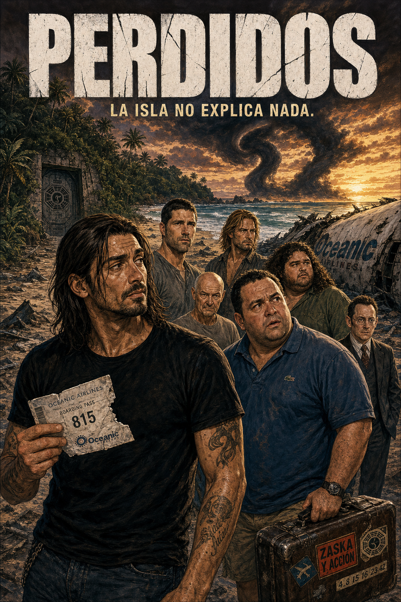
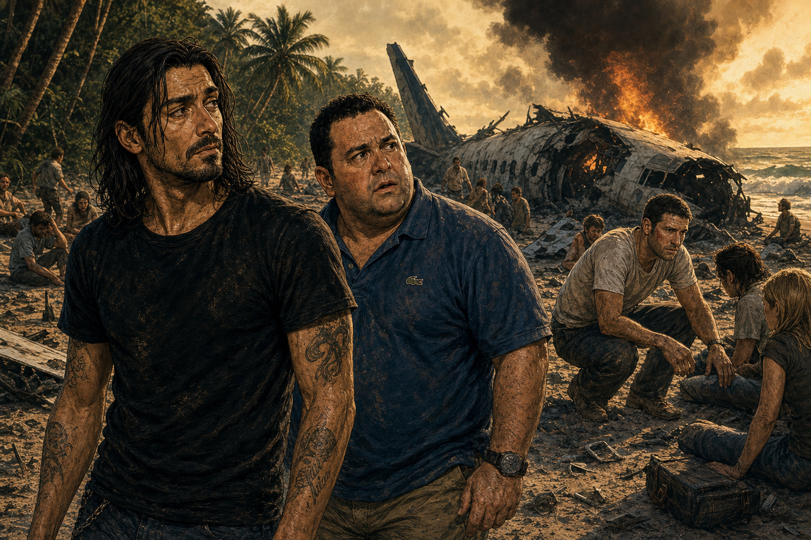
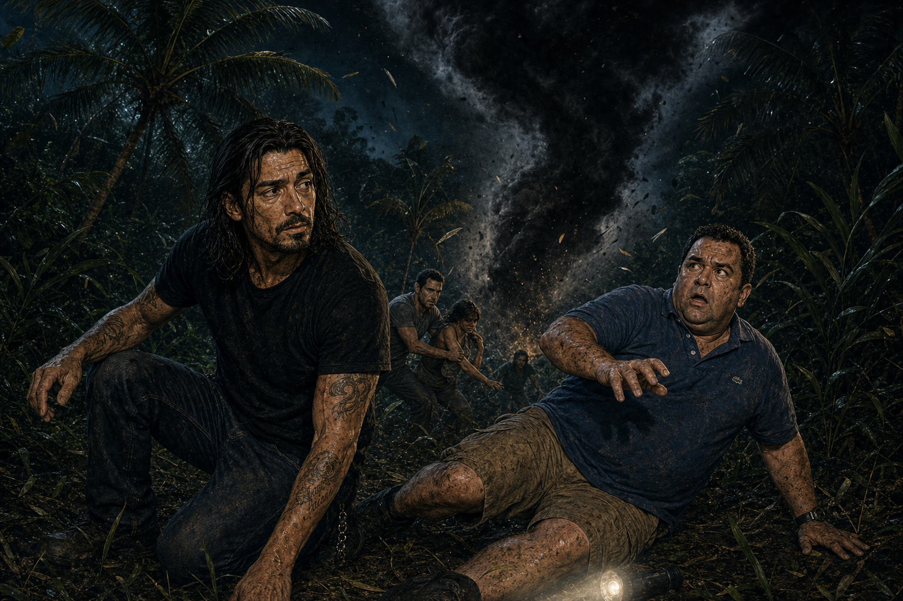
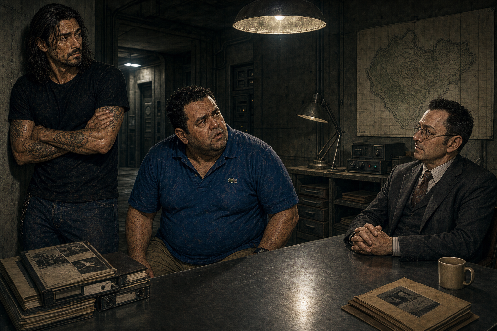
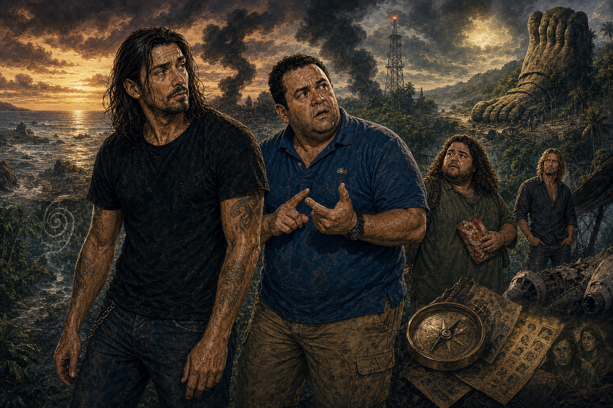
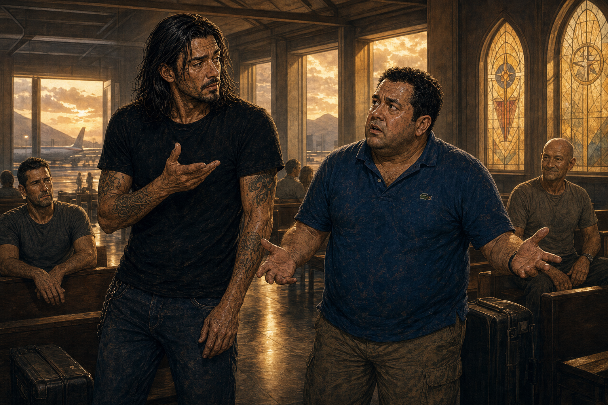
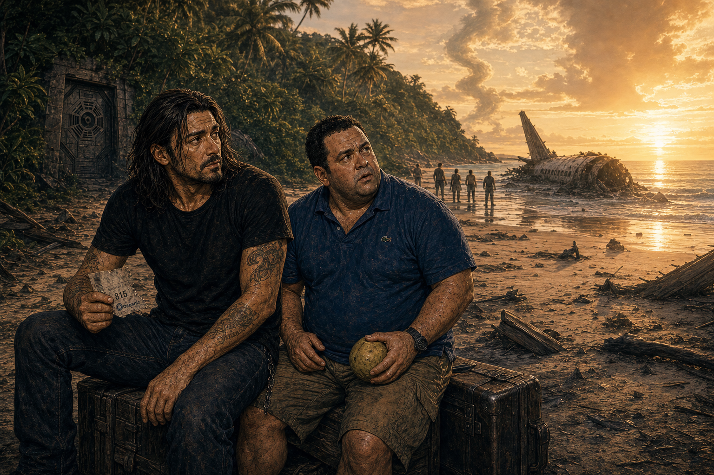

Un avión se estrella, una isla empieza a hacer cosas raras y media humanidad descubre que puede vivir seis años diciendo: “una teoría, espera, esta sí”.
Storybook Nº003SerieDisney+8,0/10

Crítica seria
Perdidos fue una sacudida televisiva porque convirtió una premisa de supervivencia en una máquina de misterio, fe, ciencia, trauma y adicción semanal. Su mayor virtud está en el arranque: personajes memorables, cliffhangers salvajes y una isla que parecía esconder una respuesta enorme detrás de cada árbol.
La serie no siempre paga todo lo que promete y su tramo final sigue siendo discutible, pero sería injusto reducirla a su final. Durante años cambió la conversación televisiva, hizo comunidad antes de que la palabra se gastara y dejó episodios que todavía tienen una fuerza brutal.
Escena 1 - El accidente

RULO"Esto empieza con un accidente de avión y en diez minutos ya parece que la isla ha leído el guion."
TONI"Yo venía preparado para cocos y heridas. No para que el bosque suene como una fotocopiadora demoníaca."
Escena 2 - La jungla mira
TONI"Ese señor calvo está demasiado contento para estar perdido en una jungla mortal."
RULO"Locke no está perdido. Locke ha encontrado una religión con mosquitos."
Escena 3 - Humo negro

¡EL HUMO!
RULO"Aquí la serie te enseña que no estás viendo supervivencia. Estás viendo una pregunta con efectos especiales."
TONI"Pues la pregunta corre mucho, socio."
Escena 4 - Fe contra ciencia
RULO"Jack quiere arreglar la isla como si fuera una guardia de urgencias."
TONI"Y Locke quiere casarse con ella por poderes."
Escena 5 - La escotilla
TONI"Dime que no vamos a abrir una puerta metálica enterrada en medio de una isla maldita."
RULO"Claro que vamos. Es televisión de 2004: si hay una escotilla, se abre y se hipotecan tres temporadas."
¡PULSA EL BOTÓN!
Escena 6 - El búnker
RULO"De pronto entra Desmond, suena la música, hay un ordenador viejo y tú ya estás dentro de la secta."
TONI"Si me dicen que tengo que meter números cada 108 minutos, pido traslado a la jungla asesina."
Escena 7 - Los Otros
TONI"¿Por qué hay casitas de urbanización en una isla que te persigue con humo?"
RULO"Porque Lost no da respuestas. Te cambia la pregunta y encima te cobra comunidad."
Escena 8 - Ben Linus

BEN"Yo no miento. Solo administro la verdad con presupuesto de villano."
RULO"Ben Linus es el tipo que te vende una trampa y te hace sentir culpable por no agradecerla."
Escena 9 - Números y destino

¡4 8 15 16 23 42!
TONI"Estos números los oye mi madre y los echa en la Primitiva."
RULO"Y si gana, te digo yo que la isla aparece en Benidorm."
Escena 10 - El final

TONI"Estoy emocionado y cabreado a la vez. ¿Eso cuenta como entender el final?"
RULO"Cuenta como haber visto Lost correctamente."
NO ESTABAN MUERTOS TODO EL TIEMPO. PERO CASI NOS MATAN EXPLICÁNDOLO.
Escena 11 - La pizarra imposible
RULO"A ver: la isla es lugar, símbolo, purgatorio emocional, imán raro, tablero de dioses y excusa para flashbacks."
TONI"Me has explicado menos que el capítulo."
Escena 12 - Veredicto en la playa

TONI"¿Nota?"
RULO"8,0. Cinco temporadas perfectas preguntando qué es la isla. Una respondiendo con un abrazo en el aeropuerto."
Veredicto de Rulo y Toni
8,0
LA ISLA NO EXPLICA NADA
Perdidos es enorme incluso cuando tropieza. Inventó una forma moderna de enganchar al espectador, creó personajes que importaban y convirtió cada semana en una teoría de bar. El final no está a la altura de todo el misterio que acumuló, pero el viaje fue tan potente que todavía seguimos discutiéndolo.
MisterioAventuraDisney+2004-2010Ben Linus MVP
Curva de temporadas
Temporada
Idea
Nota
1
El accidente, la isla y el misterio como droga semanal
9,0
2
La escotilla, Desmond y la serie cambiando de género
8,5
3
Los Otros, Ben Linus y la maquinaria ya a pleno rendimiento
8,5
4
Flashforwards, ritmo fuerte y sensación de plan
8,0
5
Viajes temporales, mitología y placer de fan entregado
8,0
6
Cierre emocional potente, respuestas discutibles
7,0
Personajes principales
Personaje
Función
Actor
Jack Shephard
El líder que intenta curar una isla que no se deja operar
Matthew Fox
John Locke
La fe con cuchillo, sonrisa y destino en la mochila
Terry O'Quinn
Sawyer
Carisma, trauma y mote ofensivo por minuto
Josh Holloway
Hurley
El corazón de la serie cuando todos se ponen intensos
Jorge Garcia
Ben Linus
El villano que convierte una mentira en arquitectura